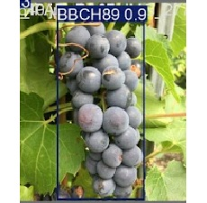
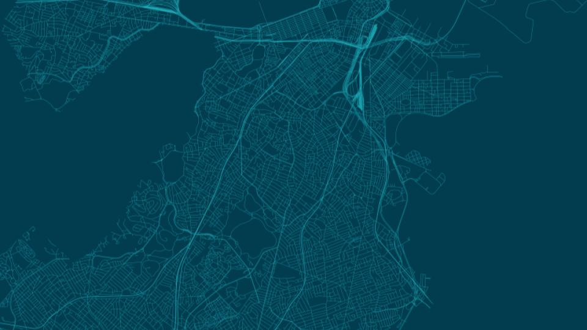
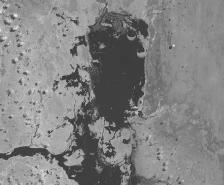

EN
FR
ES
About me
CV
Contact
Erika Saavedra
Geomatics Professional
• Geospatial Analysis • GIS • Remote Sensing • Spatial Data Science • Computer Vision • Precision Agriculture
Projects

Computer Vision for Grapevine Phenology Monitoring

Crime Prediction and Monitoring using R

Flood Monitoring with Satellite Imagery